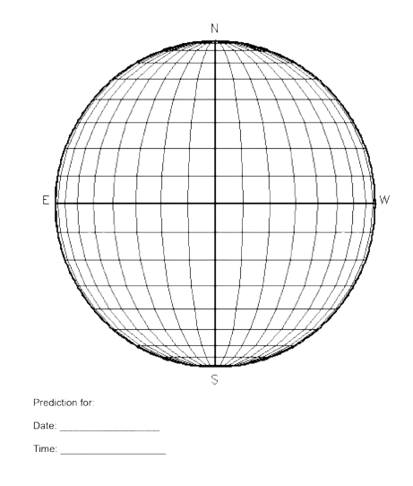

Las manchas solares son zonas oscuras en el Sol dónde el movimiento granulado de la fotosfera está inhibido (parado) por la entrada o salida de plasma siguiendo las líneas de campo magnético del Sol.
Como si de una pelota de baloncesto se tratara, podemos medir cuánto tarda ésta en dar una vuelta midiendo la posición de una manchas en el tiempo.
De este modo, fijándonos en el movimiento de una mancha de la superficie de Sol podemos saber cuánto tarda el Sol en dar una vuelta sobre sí mismo.
El tiempo que tarda un objeto en dar una vuelta entorno a su eje se conoce con el nombre de período de rotación.
ACTIVIDAD 1: CALCULA EL PERIODO DE ROTACIÓN DEL SOL
Nota: Pincha sobre cada imagen del Sol para ver las manchas mejor.
| PAREJA 1 DE ESTUDIANTES | PAREJA 2 DE ESTUDIANTES | |||||||||||||||||
| FORMA DE REALIZAR LA ACTIVIDAD | Fíjate en cómo se mueven una misma mancha entre las imágenes | Fíjate en cómo se mueven una misma mancha entre las imágenes | ||||||||||||||||
| OBSERVATORIO | Telescopio solar CESAR | Satélite SDO | ||||||||||||||||
| DATOS A UTILIZAR | Un conjunto de imágenes en el rango óptico | Un conjunto de imágenes en el rango óptico | ||||||||||||||||
|
CONJUNTO DE IMÁGENES |
|
|
||||||||||||||||
|
MODO 1: MANUAL Usa la siguiente plantilla - impresa en acetato Pon la plantilla sobre tus imágenes del sol y anota, para la mancha que elijas en cada imagen
|
|
 |
||||||||||||||||
|
CÁLCULO ENTRE IMAGEN 2 E IMAGEN 1
|
|


{kind=link}
{kind=link}
{kind=link}
ACTIVIDAD 2: CALCULA EL PERIODO DE ROTACIÓN EN EL ESTAS HERRAMIENTAS WEB
| PAREJA 1 DE ESTUDIANTES | PAREJA 2 DE ESTUDIANTES | |
| FORMA DE REALIZAR LA ACTIVIDAD | Fíjate en cómo se mueven una misma mancha entre las imágenes | Fíjate en cómo se mueven una misma mancha entre las imágenes |
| OBSERVATORIO | Telescopio solar CESAR | Satélite SDO |
| DATOS A UTILIZAR | Un conjunto de imágenes en el rango óptico | Un conjunto de imágenes en el rango óptico (SDO HMI) |
|
CONJUNTO DE IMÁGENES (buscar las siguientes fechas en la aplicación) |
|
|
| MODO 2: HERRAMIENTAS |
Applet de CESAR con acceso a Internet |
JHelioviewer |
|
CÁLCULO: Completa los datos solicitados a partir de restar los valores entre dos imágenes consecutivas de:
|
 |
PREGUNTAS:
- ¿Qué diferencia veis entre las imágenes tomadas por el telescopio solar en Tierra de CESAR y los de satélite SDO? ¿Veis la
- ¿Cual es el periodo de rotación del Sol, tomando como referencia la región activa 14213 en las imágenes NASA/SDO tomadas del 2025.09.09-2025.09.11 por el MÉTODO 1?
- ¿Cual es el periodo de rotación del Sol, para las imágenes CESAR tomadas en 2025.08.xx-2025.08.yy? (Pista: PASO 3 DEL MÉTODO 2)